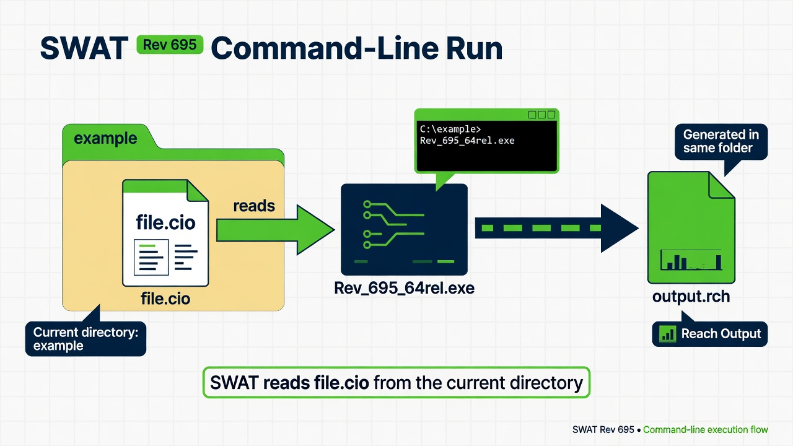

SWAT
Classic SWAT Rev. 695. The executable reads file.cio from the current directory.

1. Get the software
Download SWAT executables from Texas A&M. Lab install: C:\Grok\Models\installs\SWAT (zip in archive\downloads\SWAT.zip).
2. Stand in the input folder
cd C:\Grok\Models\installs\SWAT\example
file.cio must exist here. That file names the rest of the SWAT inputs.
3. Run
.\Rev_695_64rel.exe
4. Confirm success
output.rch should be written and larger than about 1 MB. The first data row for REACH 1 reports FLOW_OUT (cms).